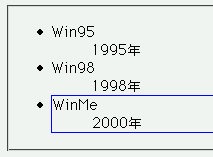
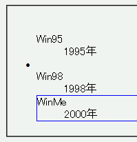

li要素の子孫にdl要素リスト要素（ul, ol, dl）を置くと、li要素につくリストマークが上方にずれて表示される。また、この状態のli要素に上ボーダーを設定するとリストマークが消える。また、最初のli要素のリストマークも消える。
<ul> <li><dl> <dt>Win95</dt><dd>1995年</dd> </dl></li> <li><dl> <dt>Win98</dt><dd>1998年</dd> </dl></li> <li style="border:1px solid blue;"><dl> <dt>WinMe</dt><dd>2000年</dd> </dl></li> </ul>
3番目のリストアイテムはボーダーが設定されています。
Moz1.0での表示（標準モード）
WinIE6.0での表示（標準モード）
最初のリストアイテムのリストマーカーが消える現象は、以下のいずれかの方法で回避できます。
<ul> <li><div><dl> <dt>Win95</dt><dd>1995年</dd> </dl></div></li> </ul>
<ul> <li><!-- コメント --><dl> <dt>Win95</dt><dd>1995年</dd> </dl></li> </ul>
WinIE6.0では標準・互換モード問わずバグが発生しています。